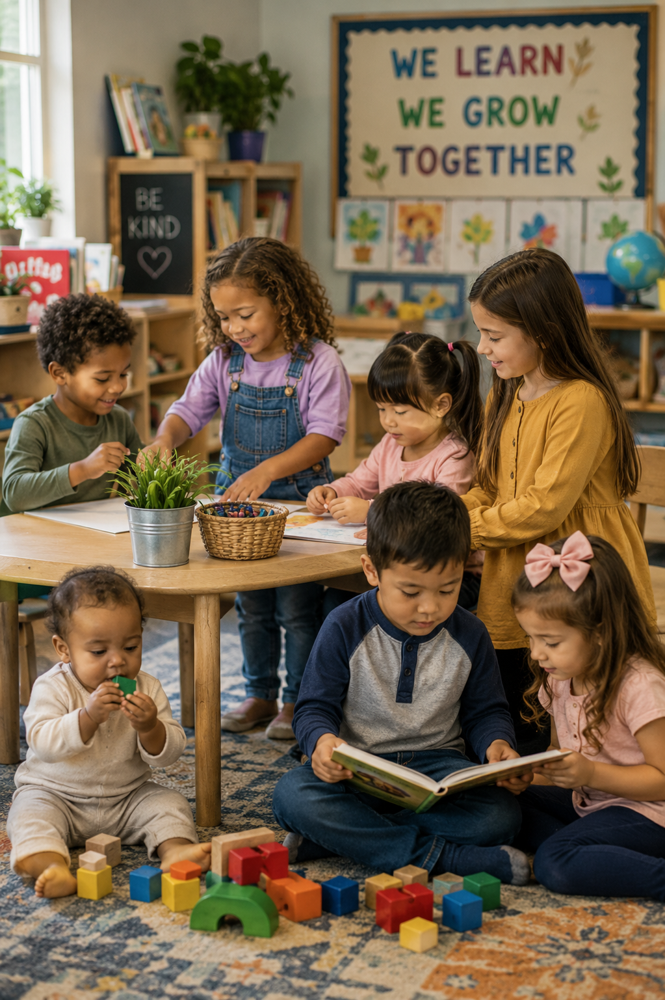
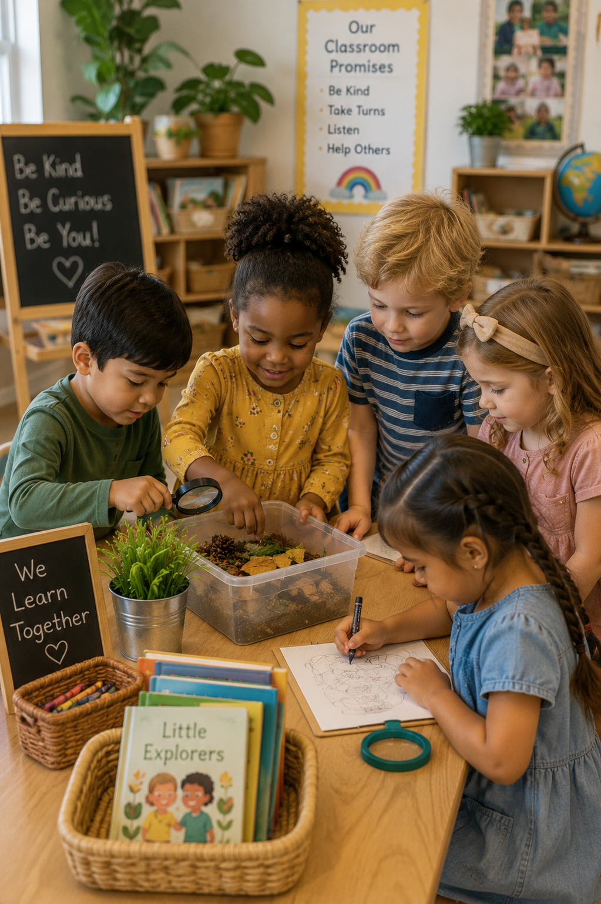

Language & Literacy
Build vocabulary, strengthen communication, encourage storytelling, develop listening skills, and inspire a lifelong love of books and early writing.
Explore Literacy →Every stage of childhood is filled with opportunities for growth, curiosity, creativity, and discovery. Explore curriculum studies, lesson plans, classroom activities, printable resources, and teaching tools designed specifically for children from birth through Pre Kindergarten.

Browse curriculum studies, classroom activities, lesson plans, printable resources, and teaching ideas designed to support children at every stage of early childhood development.
Children learn best when experiences support every area of development. Discover activities and curriculum resources that encourage language, thinking, creativity, movement, relationships, and exploration through meaningful play.
Build vocabulary, strengthen communication, encourage storytelling, develop listening skills, and inspire a lifelong love of books and early writing.
Explore Literacy →Explore counting, sorting, measuring, patterns, shapes, problem solving, and early mathematical thinking through engaging experiences.
Explore Math →Encourage children to investigate, ask questions, experiment, predict outcomes, and discover the amazing world around them.
Explore Science →Inspire imagination through painting, drawing, music, dramatic play, movement, sculpture, and creative expression.
Explore Arts →Foster empathy, cooperation, confidence, self regulation, friendships, and positive classroom relationships every day.
Explore Social Emotional →Strengthen gross motor movement, fine motor coordination, balance, healthy habits, and active exploration through play.
Explore Physical →Save planning time with classroom resources designed to support engaging instruction, organization, and meaningful learning throughout the school year.
Ready to use lesson plans aligned with curriculum studies and early childhood best practices.
View Lesson Plans →Creative ideas for literacy, science, dramatic play, art, math, sensory exploration, and more.
Explore Centers →Songs, discussions, read alouds, morning meetings, and engaging group experiences.
Explore Circle Time →Observation forms, developmental checklists, and documentation resources for every classroom.
View Assessments →Hundreds of printable classroom materials ready to download and use immediately.
Browse Printables →Strengthen the connection between school and home with engaging family learning activities.
Explore Family Resources →High quality early childhood education nurtures every area of development. Our curriculum resources encourage children to think, communicate, create, explore, move, and build meaningful relationships through hands on learning experiences that inspire confidence and curiosity.
Encourage children to question, investigate, solve problems, and make meaningful discoveries through active exploration.
Build vocabulary, strengthen listening skills, encourage conversations, and develop confident communicators.
Foster kindness, cooperation, empathy, and respect while helping children build lasting friendships.
Support children as they become capable learners who enjoy exploring, creating, and solving new challenges.

These engaging investigations encourage exploration, creativity, and meaningful learning while supporting every area of child development.

Investigate rolling, bouncing, throwing, measuring, predicting, and comparing different types of balls through exciting hands on activities.

Observe leaves, bark, branches, wildlife, habitats, and seasonal changes while connecting children with nature.

Discover floating, sinking, pouring, freezing, melting, and simple science investigations through water exploration.
Curriculum Studies
Hands On Activities
Printable Resources
Designed for Early Childhood Classrooms